1925—Millinery
by Jane Loewen
CHAPTER XV—LINE HARMONY
I. FUNDAMENTAL PRINCIPLES OF LINE
Anyone who studies algebra and geometry develops the imagination and trains the eye to see. The really successful hat is one which has style, line, good workmanship, and becomingness. The first three attributes involve mathematics and it takes all three to make the fourth—becomingness.
PRINCIPLES OF LINE IN ART
The fine arts are those which have primarily to do with imagination and taste, and are applied to the production of what is beautiful. Sculpture, painting, and architecture are the accepted fine arts.
1. Sculpture. Sculpture is the representation of life in wood, stone, or metal.
Millinery more nearly approaches sculpture than it does any other of the arts in the matter of line. Each has the three dimensions ; each involves the breaking up of mass into line and form, though methods, materials, and purpose are vastly different.
Greek sculpture attained the highest point of perfection and is universally accepted as the standard of beauty. Simplicity and fidelity of line are the keynote of Greek masterpieces in bronze and marble. Every superfluous line is eliminated. Beauty, grace, and naturalness are the result.
Marble pictures made with the utmost simplicity of line and detail attain the highest point in the sculptor's art.
2. Painting. Webster's definition of painting is "a work of art in which objects are presented in color on a flat surface."
The painter may use light, shadow, and color, as well as line. He may utilize all four to give the illusion of form and dimension to a flat surface. The great painting is that one which gives the illusion of reality, the effect of life and form, with a few, telling lines. Art involves constant practice in restraint and elimination. A few lines, bold and decided, or fine and delicate, give beauty which cannot be produced by mere detail.
3. Japanese prints. Japanese art is an outstanding example of what may be accomplished with line. Japanese prints stand alone for sheer beauty in this regard.
PRINCIPLES OF LINE IN MILLINERY
1. General principles. In millinery, line gives to the hat that intangible thing called style. A hat may be very pretty and becoming, but have no line or style. In choosing a hat it is always well to know which you want.
2. Harmonizing of line with the costume. It must be remembered that a hat is but one unit of a costume. To make a complete and perfect whole, the line of the hat must be in harmony with the general lines of the rest of the costume.
A hat of tailored lines may be all that is desirable when worn with street costumes and utterly ugly when worn with frocks.
3. Harmonizing of hat lines with the general style.
Mode of hairdressing. The mode of hairdressing is always a determining factor in the matter of becoming line. A fluffy mode, a smooth, severe arrangement, a shingle, or a Russian bob make the lines of the head entirely different. The lines of the hat must be adjusted and adapted to each manner of dressing the hair. Different qualities are required in a hat to make it comfortable. This changes the line of the crown, and the brim line must be changed to correspond.
Fashion silhouette. Styles in line change with the seasons. What is good this year, may be out of fashion next.
II. PRINCIPLES OF LINE AS APPLIED TO THE INDIVIDUAL
OBJECTS TO BE ATTAINED
The modern idea of facial beauty is regularity of features and profile with irregularity of head line—the head line being exaggerated by the knot or cut of the hair. This idea does not vary greatly from the ancient Greek sculptor's formula.
The classifications given and the hat lines suggested are all done with the purpose of gaining an effect of regularity of features. Every woman knows that there is no real beauty or depth of character in a perfectly regular face. Few of us need worry over our perfections. But all of us like to make our faulty features less conspicuous so that we are not known as "that girl with the long nose," or "that girl with no chin."
1. Greater beauty for the individual. As has been said, the real purpose of any hat is to add to and enhance the good points of the wearer.
2. Beauty of line in the hat. Beauty of line in the hat is the goal for which the designer strives. The choosing of that hat with good lines, which brings out and complements the good and minimizes the bad points of the individual, is the task of the milliner.
3. Conformity with fashion dictates. In selecting a hat it is necessary to choose one in keeping with the lines of the rest of the wardrobe—sport lines for sport clothes; dressier, softer lines with dressier suits and frocks. Close, trim hats are best for the narrow silhouette and straight lines. Larger hats or medium hats of exaggerated lines are in keeping with the bouffante silhouette. High bandeaux and raised back lines are in keeping with the Directoire profile.
Always, in line, as in other matters of dress, the paramount thing is to have such harmony that the clothing is but a fitting frame for the pictured individual and the observer conscious only of the personality, not of the garments.
SPECIFIC TYPES
1. Prominent nose. There are two points which every woman with a large nose must remember about her hats. She cannot wear brimless hats nor hard crowns of any kind without exaggerating the already prominent feature.
With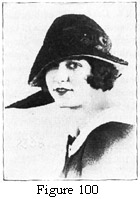 glasses 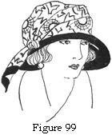and long chin. For this type a brim which extends at least beyond the glasses and the nose is necessary. A brim which turns up at one side and has some irregularity, as in figures 99 and 100, is best for this type. A straight sailor is too regular of line and makes irregular features more pronounced by contrast.
Figure 99. Note the Wide Soft Lines of Both Brim and Crown.
Figure 100. The Brim Extends Out Over the Face before Turning Up. The Handmade Quill Gives Width and Irregularity of Line.
A decidedly mushroom brim obscures the top half of the face oval until only the lower half (the long nose and chin) remains visible. Therefore a wide, soft crown of irregular line, and a medium-size brim of irregular line and some width, are best for this type of face.
With glasses and short chin. Glasses, as we said before, necessitate some brim. A short chin changes the requirements of the type above to a smaller brim and crown. The lines may be practically the same. The crown may be as high, but not as wide.
With receding forehead. This is one of the most difficult types of faces to fit with a becoming hat. As a rule, the headsize is small, yet the lines of the hat need to be soft, rather wide, and irregular. A small rolled or straight brim with a small coronet, which has width and some height, is always becoming, coronet may be embroidered with soft materials, as ribbonzene or georgette folds, or narrow ribbon. The embroidered material may be draped on loosely. The coronet may be covered with very small flowers or with folds of taffeta or hair braid. A ruff of velvet or a wired flare of lace will give the same desired effect.
With prominent forehead. A prominent nose and prominent forehead rarely occur together. When they do, they usually belong to a person of strong and marked mental characteristics If the face is full, wide upturned brims and irregular draped turbans that have not a severe headsize line may be worn that are wide at the side and narrower at front and back is becoming if there is some irregularity of line. As a rule, a frame has to be shaped and adjusted for each individual of this type.
2. Small or snub nose. As a rule, a small snub, or tip-tilted, nose belongs to a little face. The face may take on fat, t most likely started life small.
Here more than in other types, the rule of keeping a crown proportionate to the width of the face oval should be followed This means that the crown should be very little wider and narrower than the face at its widest point.
With glasses. Small brims very nearly straight or slightly rolled are becoming to this group. Soft ribbon hats that roll from the face are good because they do not form an abrupt turn at the headsize. Tricorns and irregular napoleons are becoming. Larger hats cannot be too extreme in size. They are usually becoming with short or turned-up backs. A short back line balances better with the flat profile than does a wide back.
With low forehead. A girl with a low forehead and a snub can almost invariably wear becoming chin-chin hats, rolled sailors, tricorns, and brims of the walking-hat order. Larger hats must have perfectly coordinate lines, usually with a short roll at the back and not too great width anywhere.
With high cheek bones. Hats for a girl with high cheek bones and a small nose take a great deal of study. Small brims with wide, soft trimming; small brims with tam crowns; sailors; and irregular, wide, small hats, are safest and most fitting to the type.
3. Wide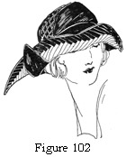 face  oval. A wide face oval usually needs wide,
soft crowns, as cap crowns draped wide from side to side, saddle crowns,
two-section crowns, and tam crowns.
oval. A wide face oval usually needs wide,
soft crowns, as cap crowns draped wide from side to side, saddle crowns,
two-section crowns, and tam crowns.
Figure 101. The Hat in This Figure Has Soft Width with Lifted Lines. This Makes It Becoming to the Wide Face Oval.
Figure 102. The Brim of This Hat Is Cut in an Interesting Way to Give Height and Irregularity of Line.
With high cheek bones. A wide face with high cheek bones needs an unusual kind of irregularity. The crown must be kept low or there will be an exaggerated kind of oval effect formed by the crown and lower part of the face. There must be width of brim to counterbalance the width of face, usually an up-turned brim. A slash at the side of the brim with added width of ribbon ornament or feather is a good formula. Wide napoleons and continentals are becoming. A girl of this type must be careful of the way she wears her hat. A very slight angle with the brim pulled well down on the head is good. A hat worn back on the head with this kind of face becomes grotesque.
With 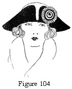wide,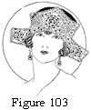 high forehead. A wide face oval and wide forehead invariably mean a large headsize. Together they mean wide, soft crowns, and wide, exaggerated brims with a bend or roll. Slashed brims—that is, irregular, up-turned brims with a slash at the side or side front—give good lines (see figures 103 and 104). Only French (slightly rolled) sailors and flat brims with rolled edge or a mushroom effect at the headsize and a straight flange are becoming.
Figure 103. The Brim of This Design Gives Broken Lines Very Becoming to Many Full Face Ovals.
Figure 104. The Slashed Front of This Brim Gives Irregularity to Its High Flare.
With glasses. A wide face oval with glasses means that there must not be a decided or severe headsize line, Otherwise the formula is the same as for Figure 104 below.
With large headsize and much hair. There is a straight crown which is very becoming to this type when the side crown is softly draped with even folds of fabric. It is generally used on a modified-shepherdess or a walking-hat brim. Brims which are wide and irregular and roll from, rather than turn off, the face are becoming. A big headsize means, of course, a brim proportionately large.
With small nose and chin. A wide face oval with small nose and chin needs soft, wide crowns that are of medium height, as a four-section cap crown, large cap or puffed crown, and some of the crowns made entirely of folds. Small napoleons, irregular turbans, small-brim hats with irregular width in the trimming, and poke brims with transparent maline or lace edges make good frames for this kind of face.
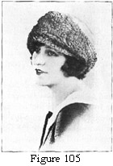4. Narrow face oval. The hat becoming to the narrow face oval is one that will soften the lines of the face (the features of a narrow face oval have a tendency to be sharp) and shorten the length of the face. Many of the small mushrooms and pokes are becoming. Turned-up brims should come well down over the head before turning. Turbans must be wide and soft with a lower drape or line of folds on one side (see Figure 105).
Figure 105. Note the Small Brim and Soft Width Used for This Turban.
With very long nose. There is a medium rolled brim with lines between those of a chin-chin and a French sailor which is becoming to this type (see Figures 99 and 101). Fabric crowns that are draped over the pressed crown, giving softness and some width, are becoming to this type of face. Hats that have very irregular lines, like a modified or cut tricorn, give good brim lines.
With very low forehead. For a long face oval with low forehead the general lines as given in Figure 100, are good. As the crown presents a separate problem, four-section cap crowns pulled low on one side, and regulation cap crowns wide from side to side and draped low at the right side, give good lines for this type.
With long chin. A long face oval with a long chin makes some width in an up-turned hat necessary for balance of line. Mushroom brims are good if they are not severe and if they do not droop decidedly. A brim which droops a great deal shows only hat, a little face, and a long chin.
Of very tall person. The lines of the hats becoming to the girl with a long face oval are those which shorten the face line. They also shorten the silhouette or add nothing to the general length effect, so there is no extra problem involved.
With much hair. This means a long face oval with a large headsize. The brim lines may be the same. They need only be exaggerated and the brim made wider in proportion to the crown.
5. The round face. The hat for a round face oval should be so designed as to add to or lengthen the oval. The crown must always be wider than the face at its widest point. A narrow crown makes the face seem larger.
With snub nose. A snub, or short, nose with a round face means that the hat cannot be too large of brim and cannot turn up too decidedly from the forehead. A brim which extends out an inch or more and then turns up is becoming if it has wide irregularity. Width of brim and lifted line are needed for the full face (see Figure 103).
Care must be exercised not to have the brim turned too high or the line will make the nose seem even smaller.
With glasses. The round face oval with glasses makes it necessary for a hat to have more brim than the other types under this heading.
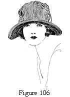A brim which rolls decidedly in the back, slightly at the sides, and extends almost straight over the face to about three inches in front and three and one-half or four inches at the side fronts is always good (see Figure 106). Large, soft crowns, irregular brims with width, and only the turned-up brims that have a visor or a headsize roll are becoming to girls or women of this division.
Figure 106. Width of Brim, Short Back, and Rolled Front Make This Style Becoming to Many Women.
Very small chin. A small chin with a round face presents an added difficulty to the already difficult matter of selecting a becoming hat. This particular set of features usually belong to a short person and the hat should have lines which add length to the silhouette. The accepted means of obtaining height are not possible because they would make a top-heavy effect in proportion to the face, and a high trimming, or an extremely high crown or brim will make the chin smaller by comparison.
Draped turbans of the modified Hindu type (see Figure 105), but with a small brim or visor, small brims with wide draped crowns, and close-fitting tricorns or napoleons are becoming to this classification. There must be no drooping lines to cut either profile or silhouette line. The effect is rather that of height without high trimming.
With very high forehead. A round face with a very high forehead of course means a large face with an oval both high and wide.
A large, well-fitting headsize is always one of the first requisites. The hat should be worn well down over the head. The crown must be wide and soft and of average height. The brim may be a sailor, a slightly drooping mushroom, or a modified tricorn of low rather than high lines. Full crown trimmings, as flowers or feathers, make good balance with the face lines.
MODE OF HAIRDRESSING ADAPTED TO TYPES
1. As it affects the facial contour. The manner of dressing the hair may do much to change and soften the lines of the face. There are very few women who can wear their hair pulled straight back from the face without any softness. Women who have smooth skin and beautiful, lustrous, not extremely soft hair, often adopt this severity of line and wear the extreme clothing and jewels which are accessories to the bizarre effect that they desire.
To the average woman, in nine hundred and ninety-five out of a thousand cases, who is neither extremely beautiful nor extremely plain, a soft arrangement of the hair is vastly more becoming. It is too obvious for detailed remark that some width at the sides and over the ears softens and widens the contour of the thin face, that a round face needs a higher head dress, that a high forehead needs the hair pulled low in front or parted at one side to obscure part of the forehead, and that usually the hair should be combed straight back from a low forehead to take advantage of all the possible length of oval.
2. As it affects the profile. As the old Greek conception of facial perfection was a straight profile and an irregular head line (men with a head wide from the face to the back of the head, wide spacing from eye to ear; and women with regular features, who dressed their hair in a Psyche knot), so the hair arrangement today should be made to soften the profile where the features are sharp or too decided, and to exaggerate their size where the features are not sufficiently pronounced, in order to achieve, as far as possible, the Grecian ideal.
3. As it affects the hat. As a general rule, a hat is more becoming when the hair shows just a little on the forehead and at the sides.
A hat which is worn so that it shows no hair is apt to be disfiguring.
A large knot of hair requires a hat adjusted to fit the hair. When the hair is worn in a large knot on top of the head, the crown must be deeper than for the usual head dress. To adjust the crown properly, allow at least one inch at the headsize of any crown pattern.
When the hair is worn in a large knot at the back of the head, the headsize of the brim and the crown headsize should be shaped in a decided oblong. If a pressed crown foundation is used, it will need to be raised. Rip the headsize wire. Stitch a bias strip of elastic net or buckram to the headsize edge. Trim the lower edge of this strip evenly and wire it. Add an extra inch to the headsize of the crown pattern to allow fullness for the crown and hair.
Never plan to adjust the hair for a certain hat. Only a lady of leisure has time to do this. Adjust the hat to the hair.
To put on a hat properly, catch the headsize of the hat over the top half of the knot, pull the hat well down in front, and tilt it slightly down on the right side. For a bob pull the hat over the back of the head, down in front, and tilt it to the right in the same way.
Only the girl with perfect features can wear a hat straight. A slight angle preserves better balance of line with irregular features.
QUESTIONS
- What is meant by "line" in millinery?
- In what way is the industrial art of millinery correlated with the fine art of sculpture?
- Do the general principles of line in hats change with the fashions?
- What is the object to be attained in choosing the lines of a hat for an individual ?
- Name one of the important things to remember in choosing a hat for a girl with glasses.
- Give the general rules in selecting a hat for a girl with a
- Prominent nose.
- Small nose.
- Wide face oval.
- Narrow face oval.
- Round face.
These reproductions of hats are used through the courtesy of the C. A. Loewen Company, 37 South Wabash Avenue, Chicago, Illinois, from which information may be obtained.
| 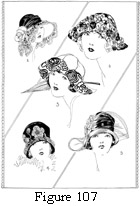 | 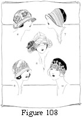 | 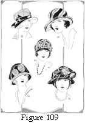 | |
| 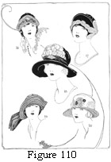 | 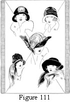 | 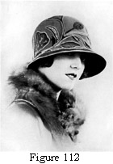 | 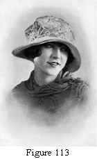 |
| 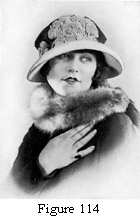 | 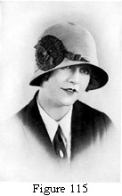 | 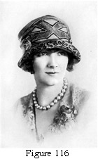 |